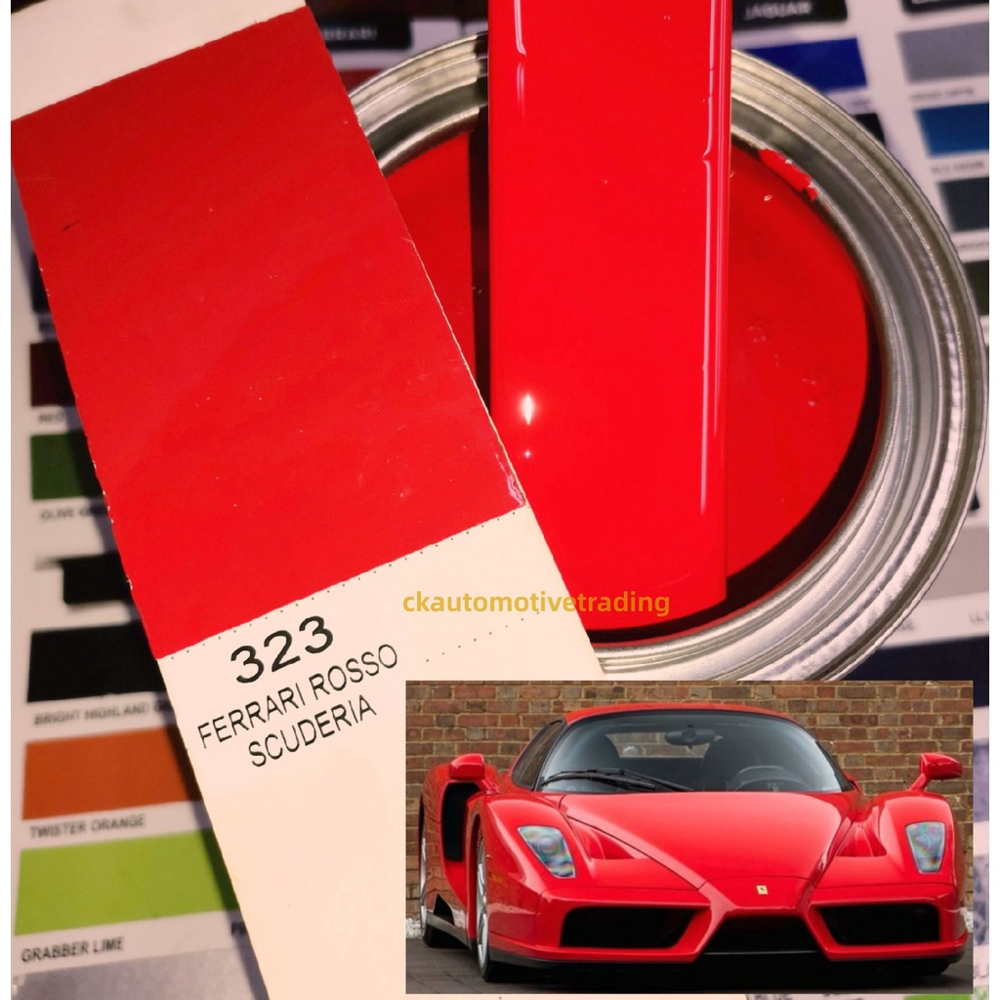
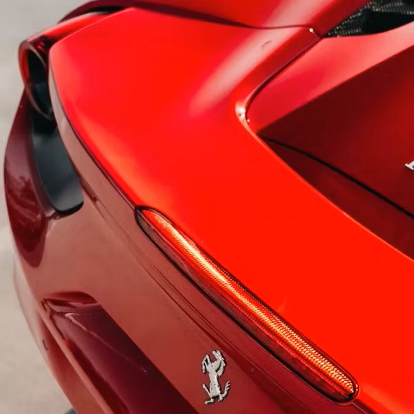
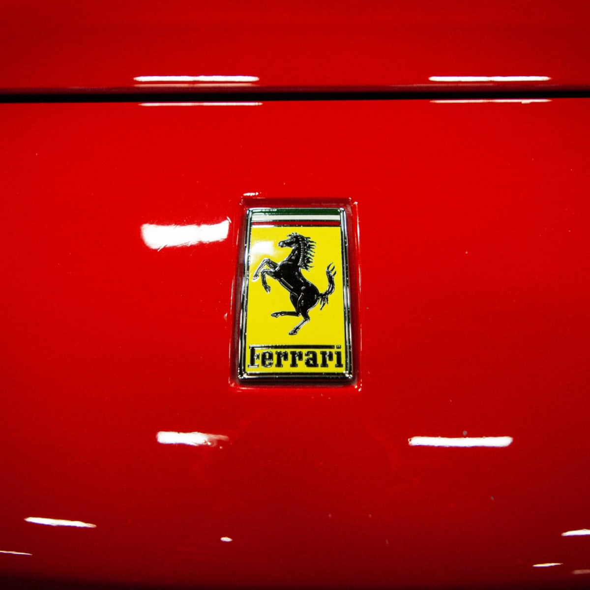
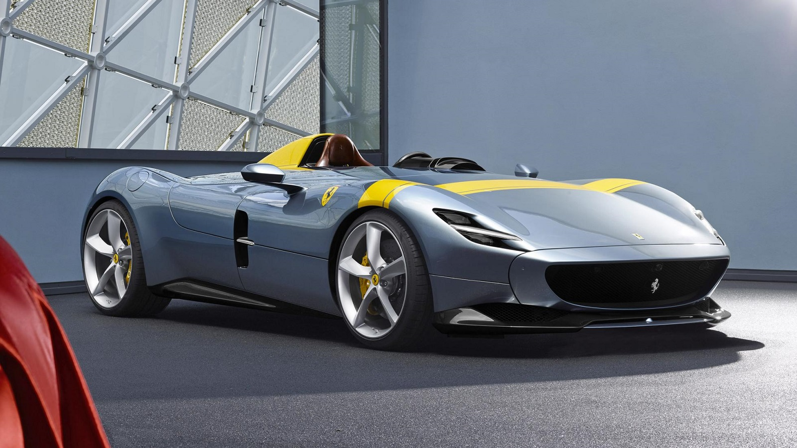
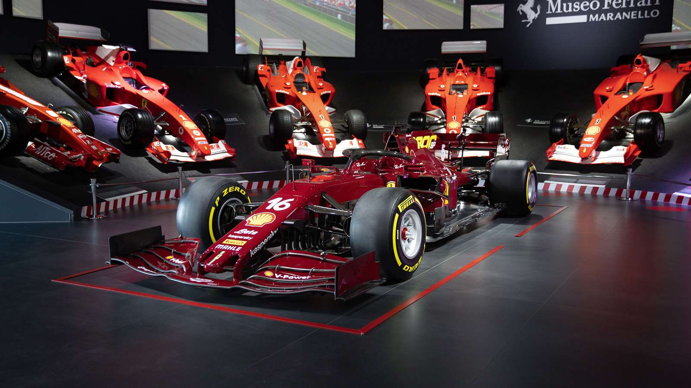
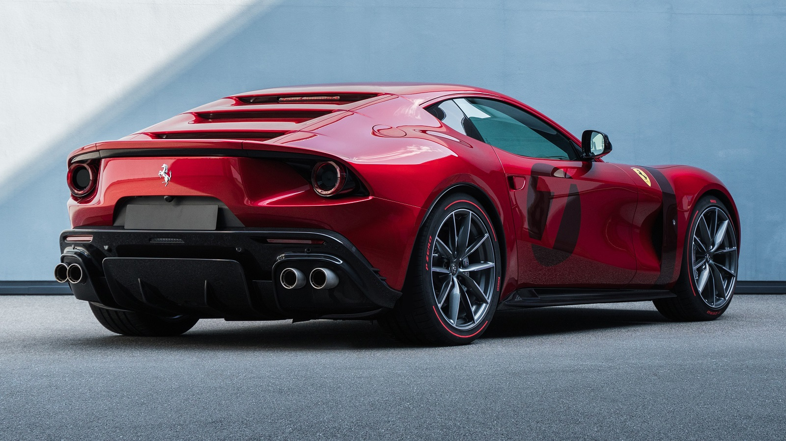
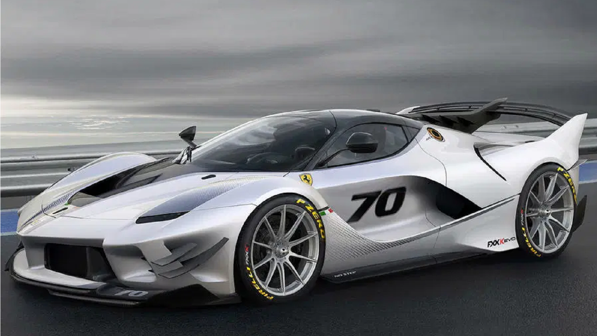
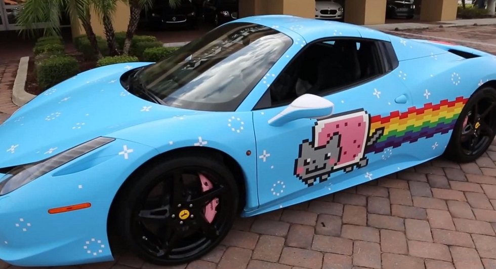
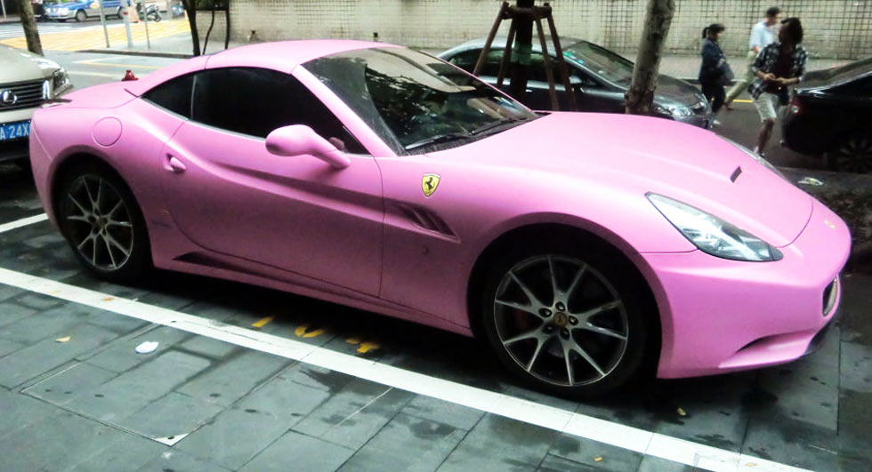

Ferrari în prezent
Convențiile de denumire
De la început, convenția de denumire a Ferrari a constat într-o deplasare unitară de trei cifre a unui cilindru motor cu un sufix suplimentar reprezentând scopul unui vehicul. Prin urmare, Ferrari 125 S avea motor V12 de 1,5 L (1.496,77 cmc) cu o cilindree unitară de 124,73 cmc; în timp ce sufixul S reprezenta Sportul. Alte mașini de curse au primit, de asemenea, nume care invocă anumite curse, cum ar fi Ferrari 166 MM pentru Mille Miglia. Odată cu introducerea modelelor de drum, a fost adăugat sufixul Inter, inspirat de echipa de curse Scuderia Inter a lui Igor Troubetzkoy. Populara la acea vreme seria 166 avea motoare de 2,0 L (1.995,02 cmc) cu cilindree unitară de 166,25 cmc, iar o serie 250 foarte diversificată avea o cilindree totală de 3,0 L (2.953,21 cmc) și 246,10 cmc unitară. Serii ulterioare de mașini rutiere au fost redenumite Europa și seria de vârf America și Superamerica. Majoritatea Ferrari-urilor au primit, de asemenea, denumiri care se referă la stilul lor de caroserie. În general, au fost utilizate următoarele convenții:
M ("Modificata"), plasat la sfârșitul numărului unui model, denotă o versiune modificată a predecesorului său și nu o evoluție completă (vezi F512 M și 575 M Maranello).
Modelele GTB ("Gran Turismo Berlinetta") sunt Berlinetta închise, sau coupé-uri.
GTS („Gran Turismo Scoperta”), acest sufix poate fi văzut în păianjeni mai vechi sau în convertibile (vezi 365 GTS/4). Acum, modelele decapotabile folosesc sufixul „Spider” (scris „i”) (vezi F355 Spider și 360 Spider). În modelele mai recente, acest sufix este folosit pentru modelele de top targa (vezi Dino 246 GTS și F355 GTS), ceea ce este o utilizare absolut corectă a sufixului, deoarece „scoperta” înseamnă „dezcoperit”. Un număr tot mai mare de oameni tind să se refere la GTS ca „Gran Turismo Spyder”, ceea ce creează presupunerea falsă că Ferrari nu cunoaște diferența dintre „spyder” și „targa”. 348 TS, care este singura targa numită diferit, este o excepție.
GTO ("Gran Turismo Omologata"), plasat la sfârșitul numărului unui model, denotă o versiune modificată a predecesorului său. Acesta desemnează un model care a fost proiectat și îmbunătățit pentru utilizarea pe circuitul de curse, fiind în continuare legal pe stradă. Doar trei modele poartă aceste trei litere: 250 GTO din 1962, 288 GTO din 1984 și 599 GTO din 2010
|
M - F512M |
GTB - Berlinetta |
|
GTS - 360 Spider |
GTO - Ferrari 599 |
Culoarea renumită
Timp de mulți ani, rosso corsa („roșu de curse”) a fost culoarea necesară pentru toate mașinile de curse italiene. Este, de asemenea, strâns asociat cu Ferrari: chiar și după ce regulile de culoare s-au schimbat, permițând echipelor de curse să se abată de la culorile lor naționale, Scuderia Ferrari a continuat să-și vopsească mașinile în roșu aprins, așa cum o face până în prezent. Pe mașinile de drum ale Ferrari, culoarea a fost întotdeauna printre cele mai populare alegeri ale companiei: în 2018, 40% dintre Ferrari au părăsit fabrica vopsite în roșu, în timp ce la începutul anilor 1990 cifra era și mai mare, de 85%. Unele vehicule Ferrari, cum ar fi 288 GTO, au fost disponibile doar în roșu.
Deși se crede că rosso corsa este culoarea definitivă a Ferrari, nu a fost întotdeauna culoarea aleasă. Ferrari-urile trimise de corsari au rulat într-un curcubeu de culori, iar una dintre primele modele de Formula 1 ale companiei era de culoare verde închis distinctiv. Într-un caz deosebit de remarcabil din 1964, în timp ce protesta împotriva cerințelor de omologare ale FIA, compania și-a mutat activele de curse la NART, o echipă de curse afiliată, cu sediul în Statele Unite. Drept urmare, pentru Marele Premiu al Mexicului din 1964, mașinile Ferrari au fost vopsite în culori americane - alb cu dungi de curse albastre. Roșul a devenit, de asemenea, mai puțin popular pe mașinile de drum ale Ferrari, un fenomen pe care compania îl atribuie popularității programelor sale de personalizare. Vorbind atât despre natura emblematică a lui rosso corsa, cât și despre puterea mărcii Ferrari, Enzo Ferrari ar fi spus odată următoarele: „Cereți unui copil să deseneze o mașină și cu siguranță o va picta în roșu.
|  |  |  |
Masini speciale
Programul Proiecte Speciale, numit și Programul Portofoliu Coachbuilding, a fost lansat în 2008 ca o modalitate de a reînvia tradiția modelelor Ferrari unice și de producție limitată din trecut, permițând clienților să lucreze cu Ferrari și cu constructorii italieni de top pentru a crea modele personalizate. bazat pe mașinile rutiere moderne Ferrari. Ingineria și designul sunt realizate de Ferrari, uneori în cooperare cu case de proiectare externe precum Pininfarina sau Fioravanti, iar vehiculele primesc omologare completă pentru a fi legale rutiere. Cu toate acestea, de la crearea centrului de stil intern al Ferrari în 2010, accentul s-a deplasat oarecum de la constructorii externi și mai mult spre crearea de noi design-uri interne pentru clienți.
Prima mașină care a fost finalizată în cadrul acestui program a fost SP1 din 2008, comandată de un director de afaceri japonez. Al doilea a fost P540 Superfast Aperta, comandat de un colecționar american.
|  |  |
|  |  |
Imaginea marcii
Ferrari își gestionează cu meticulozitate imaginea mărcii și percepția publică: face tot posibilul pentru a-și proteja mărcile comerciale, iar clienții săi sunt așteptați să-și respecte regulile și liniile directoare atunci când își îngrijesc mașinile. Compania este remarcată pentru procesele sale frecvente și diverse, care s-au concentrat pe subiecte precum forma caroseriei Ferrari 250 GTO, drepturi exclusive asupra numelor de modele (inclusiv „Testarossa” și „Purosangue”), vehicule replici și mai mulți proprietari nesancționați. modificări.
Acest Ferrari 360 roz poate fi captivant, dar este împotriva dorințelor companiei: Ferrari nu oferă vopsea roz din fabrică. Ferrari își propune să cultive o imagine de exclusivitate și lux rafinat. Pentru a facilita acest lucru, producția de vehicule este limitată în mod deliberat la sub cererea clienților, iar cumpărătorii sunt clasificați intern în funcție de dorința și loialitatea lor. Cele mai exclusiviste supermașini ale companiei, cum ar fi LaFerrari, pot avea liste de așteptare de mai multe ori peste producția totală, doar cei mai fideli clienți selectați să cumpere unul. Uneori, dorința Ferrari de a menține această percepție vine împotriva dorințelor clientelei sale; într-un caz, compania l-a dat în judecată pe designerul de modă Philipp Plein pentru postări „defavorabile” pe Instagram, care prezentau 812 Superfast lui personal. Postările, care prezentau două modele în poziții sugestive deasupra mașinii, au fost văzute de Ferrari ca „însușindu-și ilegal” marca Ferrari pentru a promova îmbrăcămintea lui Plein și ca fiind în afara percepției intenționate a mărcii Ferrari.
În plus, compania impune restricții asupra a ceea ce proprietarii pot face cu mașinile lor: nu au voie să efectueze anumite modificări, iar contractul de drept de prim refuz al companiei, menit să descurajeze speculațiile și răsturnările, interzice vânzările neautorizate în primii doi ani de proprietate. . Cumpărătorii care încalcă aceste reguli sunt trecuți pe o „listă neagră” și nu li se poate permite să cumpere un vehicul Ferrari prin mijloace oficiale. Aceste restricții ale proprietarului au devenit cunoscute în 2014, când muzicianului Deadmau5 i s-a trimis o scrisoare de încetare cu privire la Ferrari-ul său extrem de personalizat 458: mașina, pe care el a numit-o „Purrari”, poseda insigne personalizate și o ambalare cu tematică Nyan Cat, și a fost scos la vânzare pe Craigslist.
Ferrari își încurajează cumpărătorii să-și personalizeze mașinile, dar numai prin canalele oficiale, care includ programul său Tailor Made pentru pachete de echipamente personalizate și inițiative speciale de construcție de autocare pentru comisioane mai solicitante. Opțiunile de personalizare oferite prin aceste canale sunt extinse, deși sunt întotdeauna în conformitate cu brandingul dorit de Ferrari - de exemplu, compania nu oferă vopsea roz pentru mașinile sale. În 2017, CEO-ul filialei companiei din Australasia a comentat că aceasta și personalizări similare sunt „împotriva etosului companiei” și că o astfel de poziție este „o regulă de marcă. Fără roz. Fără Pokémon Ferrari!”
|  |  |